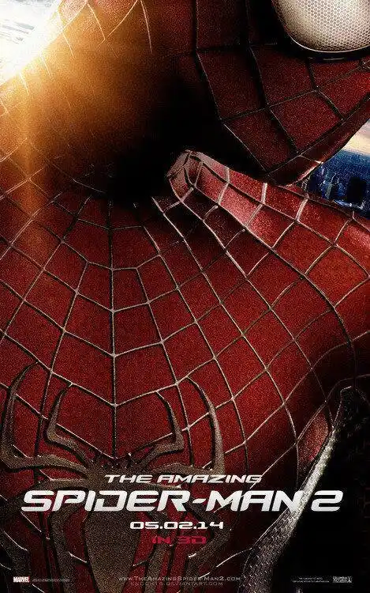

Résumé
The Amazing Spiderman 2 est un film de super-héros sorti en 2014. Peter Parker affronte Electro tout en cherchant à comprendre le passé de ses parents.

The Amazing Spiderman 2 est un film de super-héros sorti en 2014. Peter Parker affronte Electro tout en cherchant à comprendre le passé de ses parents.
Metacritic a attribué à The Amazing Spiderman 2 une note globale mitigée.
| Metascore | 70 |
|---|---|
| Positive | 0 Reviews |
| Mixed | 0 Reviews |
| Negative | 0 Reviews |
70
Avis general des spectateurs
Un film divertissant, porté par ses scènes d'action et le duo Peter et Gwen.
0
Notre avis
Avis négatif à compléter.
Vous pouvez regarder The Amazing Spiderman 2 sur les plateformes suivantes :